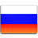

>>Страничка-портфолио инженера-программиста и конструктора Владимира Колесниченко®

НАПРАВЛЕНИЕ:
- Радиэлектроника
- Микропроцессоры и встраиваемые системы (embedded microcontroller system)
- Мехатроника и программирование станков с ЧПУ
Также я занимаюсь системным программированием и web сервисами
созданием сайтов или сервисов интернет-бизнеса(интернет-магазины)
Владею языками программирования HTML, CSS, PHP, Javascript, C++ system, C# (windows platform net)
КОЛЛЕГИ!!!
ДОБРО ПОЖАЛОВАТЬ НА МОЮ СТРАНИЦУ
Я инженер в сфере аналоговой и цифровой электроники,
разрабатываю радиоэлектронные устройства на встраиваемых системах (микроконтроллерах)
Я во всей этой сфере с 2007 года с 17 лет, с 2015-2017 подрабатывал ремонтом мобильных телефонов и материнских плат
Сейчас занимаюсь автоматизацией промышленных предприятий АСУ ТП, мехатроника
а также работаю с силовой электроникой (частотники, инверторы, контроллеры солнечных батарей (автономное энергоснабжение)
Разработка печатных плат, анализ и построение принципиальных схем
Soft:
cadence, splayn, proteus, autocad, компас3D
Монтаж и наладка систем аналогового и IP FULL HD видеонаблюдения, охранно-пожарной автоматики
(адресные системы и шлейфные)
МЕНЮ:
- Энергетика
- Электротехника
- Радиоэлектроника
- Системы радиосвязи и передачи данных
- Системы спутниковой связи
- Атоматизация, мехатроника и робототехника
- Компьютерные технологии
- Програмирование
- ЦОС DSP (Цифровая обработка сигналов)

rus
eng